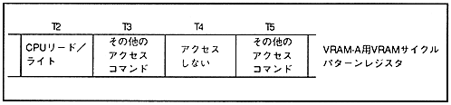

. However, in the case of write access, the wait cycle is not inserted up to two 2-word write accesses.
∙ VRAM access by the CPU can only be specified in units of access to VRAM-A or VRAM-B, not in units of banks.
When specifying VRAM access by the CPU for VRAM that is not divided into two, specify the CPU read / write access command in the VRAM cycle pattern register of the access timing. At this time, it is the same even if an access command that does not access is specified instead of the CPU read / write access command. In addition, when a screen access command (pattern name data read, character pattern data read, or bitmap pattern data read) that is set not to be displayed is set in the screen display enable register, CPU read / write access is also used. Become. Please refer to “ 4.1 Screen Display Control ” for the screen display enable register.
∙ Specifying an access command for CPU read / write or no access for all access timings of VRAM that is not divided into two allows access by the CPU at any time during the screen display period. By using this, one VRAM can be used as auxiliary work RAM. Also, by switching the VRAM used to display the picture like a frame buffer, it is possible to display the picture while rewriting it at high speed.
For example, when VRAM-A is not divided into two banks, the VRAM cycle pattern register specification for CPU read / write access to T2 and T4 is as shown in Figure 3.6.
Figure 3.6 CPU read / write access when VRAM is not divided into 2 banks

When setting CPU read / write access to the VRAM to be divided in two, set the CPU read / write access command in both the bank 0 and bank 1 VRAM cycle pattern registers at the timing of access. Must be. In addition, an access command that does not access must be specified for both the bank 0 and bank 1 registers immediately before the timing for setting the CPU read / write access command. However, if CPU read / write access is specified at consecutive timings, it is only necessary to specify it at the timing immediately before the timing at which the consecutive accesses start.